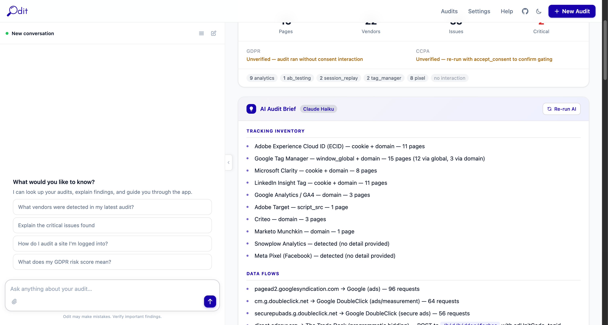
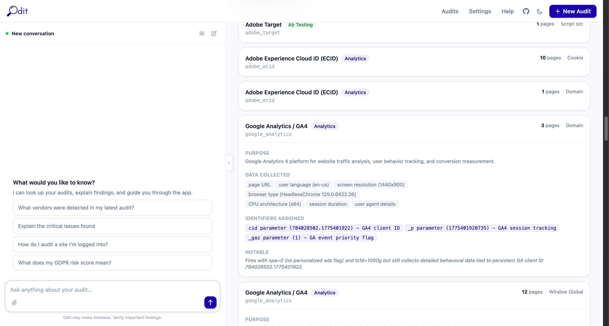
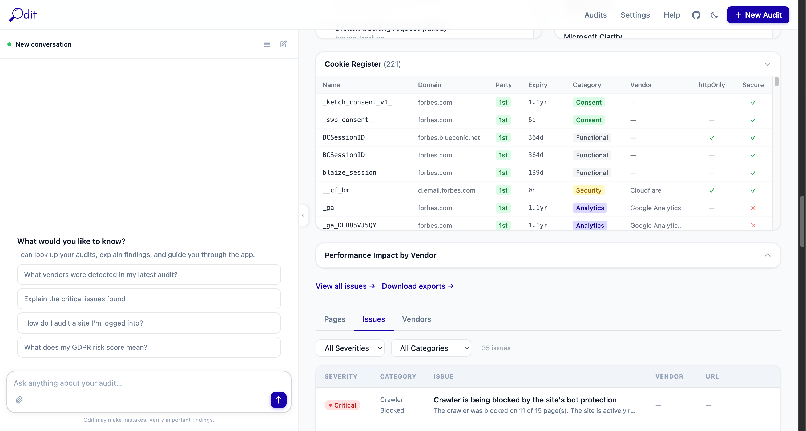
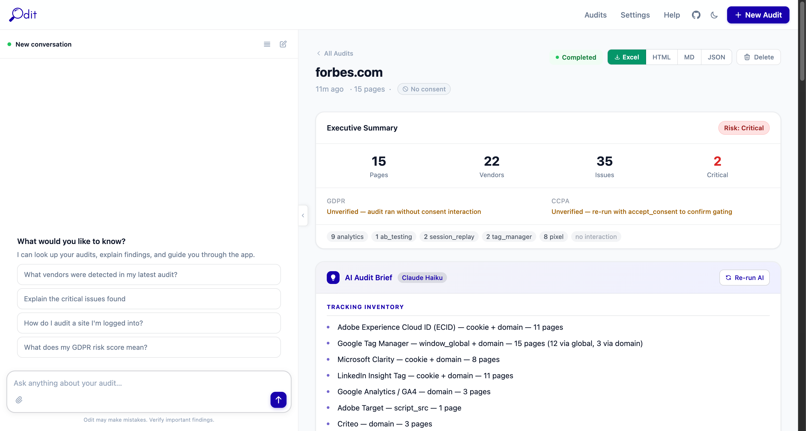
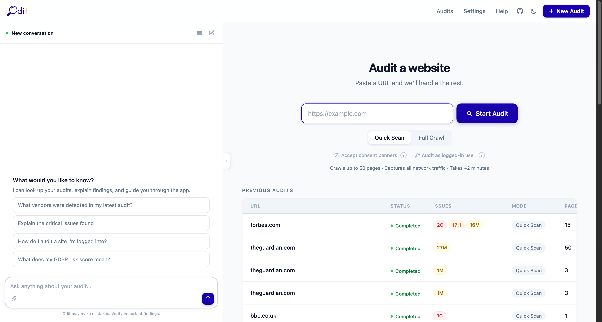
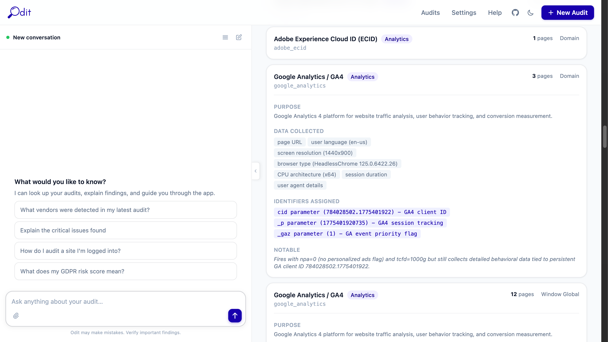
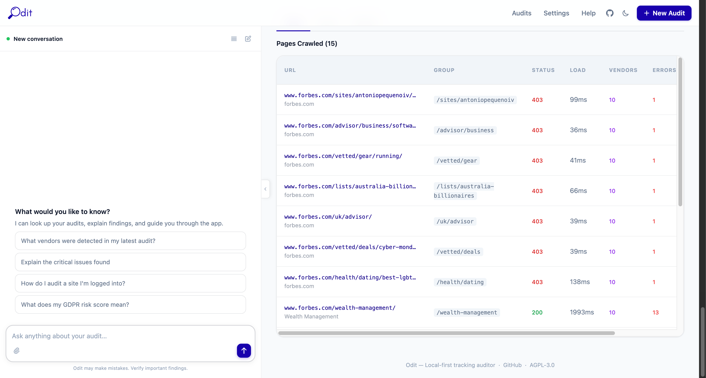

Odit crawls any website with a real browser, intercepts every network request, identifies martech vendors, and flags privacy compliance issues — all running on your own machine.

Odit is a self-hosted auditing tool that runs as a four-container Docker application. It launches a real Chromium browser, routes all traffic through an intercepting proxy, and gives you a full picture of what a website sends — and to whom.

Most websites fire dozens of tracking requests users never consented to. Regulators are catching up fast. Odit makes the invisible visible — before your DPO, your clients, or the ICO does.
Hidden tracking exposed
Third-party scripts often load other scripts. Odit captures the full chain — not just what's in your tag manager, but everything that fires as a result.
Regulatory pressure is real
GDPR, CCPA, and ePrivacy fines are increasing. Odit generates evidence-grade reports you can hand directly to your DPO or legal team.
Builds don't match briefs
Tags get added mid-project without telling engineering. Odit catches what slipped in — PII in URLs, pixels without consent, rogue cookies.
Your data stays yours
Every other audit tool sends your client's data to the cloud. Odit runs entirely on your machine. Nothing leaves unless you export it.

Whether you're writing the code, advising the client, or signing the DPA — Odit gives you the evidence you need.
Developers
Verify your tag manager before go-live. Catch PII in analytics requests. Confirm nothing fires before consent. Diff two deployments side by side.
Digital agencies
Deliver a privacy audit alongside every build. Demonstrate due diligence to clients. Offer compliance-as-a-service without buying enterprise tooling.
Privacy and compliance teams
Generate evidence-grade reports for GDPR Article 30 records. Find vendors missing from your privacy notice. Validate consent implementation end to end.
Security researchers
Map the full third-party surface of any site. Identify data flows and shared identifiers across vendors. Export HAR files for deeper analysis.
Marketing and analytics teams
See exactly what your stack sends. Debug tracking gaps, verify attribution, and confirm consent mode is working before a campaign goes live.
DPOs and legal counsel
Get technical evidence without writing code. Ask the AI assistant in plain English and receive structured answers backed by real network captures.

Before launch
Catch compliance issues before they go live. Verify your consent banner works, no PII leaks in URLs, and your vendor list matches your privacy notice.
After every major deployment
New tags get added by marketing without telling engineering. Regular audits catch rogue vendors, broken scripts, and unexpected data flows before they become incidents.
During a compliance review
Generate an evidence-grade audit report for your DPO, legal team, or regulator. Export to Excel or PDF-ready HTML with one click.
On a schedule
Ask the AI assistant to schedule weekly audits. Get a diff of what changed — new vendors, resolved issues, shifts in consent behaviour — without lifting a finger.
Paste a URL. Odit does the rest. No configuration required to get started.
1
Paste a URL
Enter any website URL, choose Quick Scan or Full Crawl, set your consent mode, and hit Start Audit.
2
Real browser crawls
A headless Chromium browser crawls the site, executing JavaScript and triggering all the tracking that a real user would.
3
Every request captured
mitmproxy intercepts all network traffic — including HTTPS — capturing full request and response details for every tracking call.
4
Results & reports
Vendors detected, issues flagged, AI payloads analysed. Export to Excel, HTML, Markdown, or JSON with one click.
Start an audit

Vendor payload analysis

Odit is local-first. It runs as four Docker containers on your laptop or server. Audit data is stored in a local folder. Nothing is uploaded to any cloud service.
./data/ on your filesystem
Requires Docker Desktop. That's it.
Executive summary
Issues & violations
Vendor inventory
Pages crawled
